Debugging Mac OSX Applications with IDA Pro
Debugging Mac OSX Applications with IDA Pro
Last updated on March 6, 2021 — v2.0
Overview
IDA Pro fully supports debugging native macOS applications.
Intel x86/64 debugging has been supported since IDA 5.6 (during OSX 10.5 Leopard), but due to IDA’s use of libc++ we can only officially support debugging on OSX 10.9 Mavericks and later. Apple Silicon arm64 debugging for macOS11 is also supported since IDA 7.6.
Note that this task is riddled with gotchas, and often times it demands precise workarounds that are not required for other platforms. In this tutorial we will purposefully throw ourselves into the various pitfalls of debugging on a Mac, in the hopes that learning things the hard way will ultimately lead to a smoother experience overall.
Begin by downloading samples:
{% file src=“samples.zip” %}
which contains the sample applications used in this writeup.
Codesigning & Permissions
It is important to note that a debugger running on macOS requires special permissions in order to function properly. This means that the debugger itself must be codesigned in such a way that MacOS allows it to inspect other processes.
The main IDA Pro application is not codesigned in this way. Later on we’ll discuss why.
To quickly demonstrate this, let’s open a binary in IDA Pro and try to debug it. In this example we’ll be debugging the helloworld app from samples.zip:
{% file src=“samples.zip” %}
on MacOSX 10.15 Catalina using IDA 7.5. Begin by loading the file in IDA:
$ alias ida64="/Applications/IDA\ Pro\ 7.5/ida64.app/Contents/MacOS/ida64"
$ ida64 helloworld
Now go to menu Debugger>Select debugger and select Local Mac OS X Debugger:
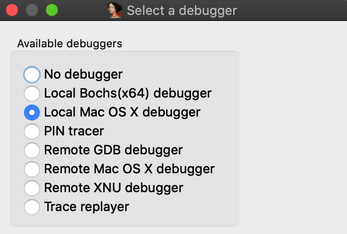
Immediately IDA should print a warning message to the Output window:
This program must either be codesigned or run as root to debug mac applications.
This is because IDA is aware that it is not codesigned, and is warning you that attempting to debug the target application will likely fail. Try launching the application with shortcut F9. You will likely get this error message:
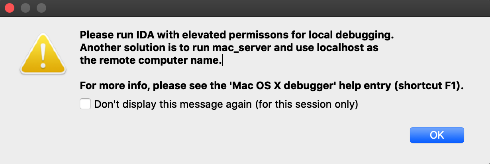
Codesigning IDA Pro might resolve this issue, but we have purposefully decided not to do this. Doing so would require refactoring IDA’s internal plugin directory structure so that it abides by Apple’s bundle structure guidelines. This would potentially break existing plugins as well as third-party plugins written by users. We have no plans to inconvenience our users in such a way.
Also note that running IDA as root will allow you to use the Local Mac OS X Debugger without issue, but this is not advisable.
A much better option is to use IDA’s mac debug server - discussed in detail in the next section.
Using the Mac Debug Server
A good workaround for the debugging restrictions on macOS is to use IDA’s debug server - even when debugging local apps on your mac machine. The mac debug server is a standalone application that communicates with IDA Pro via IPC, so we can ship it pre-codesigned and ready for debugging right out of the box:
$ codesign -dvv /Applications/IDA\ Pro\ 7.5/idabin/dbgsrv/mac_server64
Executable=/Applications/IDA Pro 7.5/ida.app/Contents/MacOS/dbgsrv/mac_server64
Identifier=com.hexrays.mac_serverx64
Format=Mach-O thin (x86_64)
CodeDirectory v=20100 size=6090 flags=0x0(none) hashes=186+2 location=embedded
Signature size=9002
Authority=Developer ID Application: Hex-Rays SA (ZP7XF62S2M)
Authority=Developer ID Certification Authority
Authority=Apple Root CA
Timestamp=May 19, 2020 at 4:13:31 AM
Let’s try launching the server:
$ /Applications/IDA\ Pro\ 7.5/idabin/dbgsrv/mac_server64
IDA Mac OS X 64-bit remote debug server(MT) v7.5.26. Hex-Rays (c) 2004-2020
Listening on 0.0.0.0:23946...
Now go back to IDA and use menu Debugger>Switch debugger to switch to remote debugging:
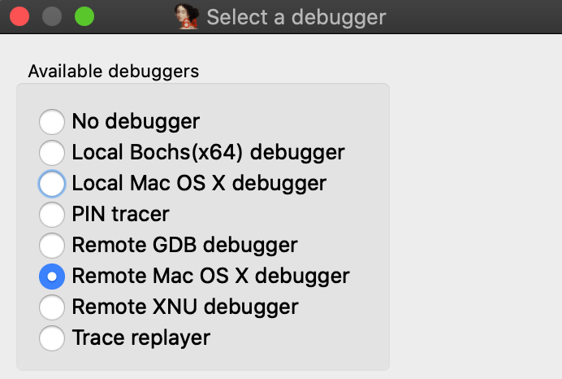
Now use Debugger>Process options to set the Hostname and Port fields to localhost and 23946.
(Note that the port number was printed by mac_server64 after launching it):
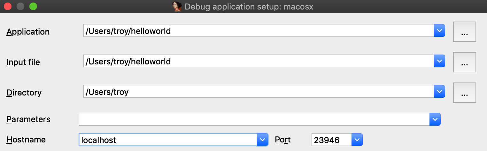
Also be sure to check the option Save network settings as default so IDA will remember this configuration.
Now go to _main in the helloworld disassembly, press F2 to set a breakpoint, then F9 to launch the process. Upon launching the debugger you might receive this prompt from the OS:
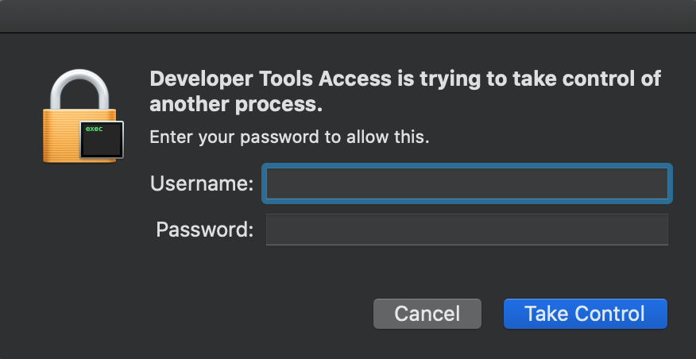
macOS is picky about debugging permissions, and despite the fact that mac_server is properly codesigned you still must explicitly grant it permission to take control of another process. Thankfully this only needs to be done once per login session, so macOS should shut up until the next time you log out (we discuss how to disable this prompt entirely in the Debugging Over SSH section below).
After providing your credentials the debugger should start up without issue:
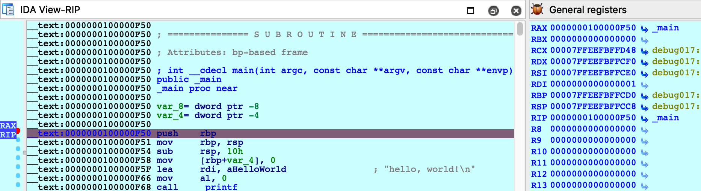
Using a Launch Agent
To simplify using the mac server, save the following XML as com.hexrays.mac_server64.plist in ~/Library/LaunchAgents/:
<?xml version="1.0" encoding="UTF-8"?>
<!DOCTYPE plist PUBLIC "-//Apple//DTD PLIST 1.0//EN" "http://www.apple.com/DTDs/PropertyList-1.0.dtd">
<plist version="1.0">
<dict>
<key>Label</key>
<string>com.hexrays.mac_server64</string>
<key>ProgramArguments</key>
<array>
<string>/Applications/IDA Pro 7.5/dbgsrv/mac_server64</string>
<string>-i</string>
<string>localhost</string>
</array>
<key>StandardOutPath</key>
<string>/tmp/mac_server64.log</string>
<key>StandardErrorPath</key>
<string>/tmp/mac_server64.log</string>
<key>KeepAlive</key>
<true/>
</dict>
</plist>
Now mac_server64 will be launched in the background whenever you log in. You can connect to it from IDA at any time using the Remote Mac OS X Debugger option. Hopefully this will make local debugging on macOS almost as easy as other platforms.
Debugging System Applications
There are some applications that macOS will refuse to allow IDA to debug.
For example, load /System/Applications/Calculator.app/Contents/MacOS/Calculator in IDA and try launching the debugger. You will likely get this error message:
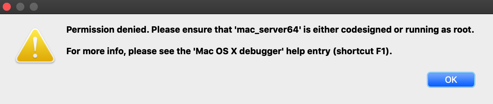
Despite the fact that mac_server64 is codesigned, it still failed to retrieve permission from the OS to debug the target app. This is because Calculator.app and all other apps in /System/Applications/ are protected by System Integrity Protection and they cannot be debugged until SIP is disabled. Note that the error message is a bit misleading because it implies that running mac_server64 as root will resolve the issue - it will not. Not even root can debug apps protected by SIP.
Disabling SIP allows IDA to debug applications like Calculator without issue:
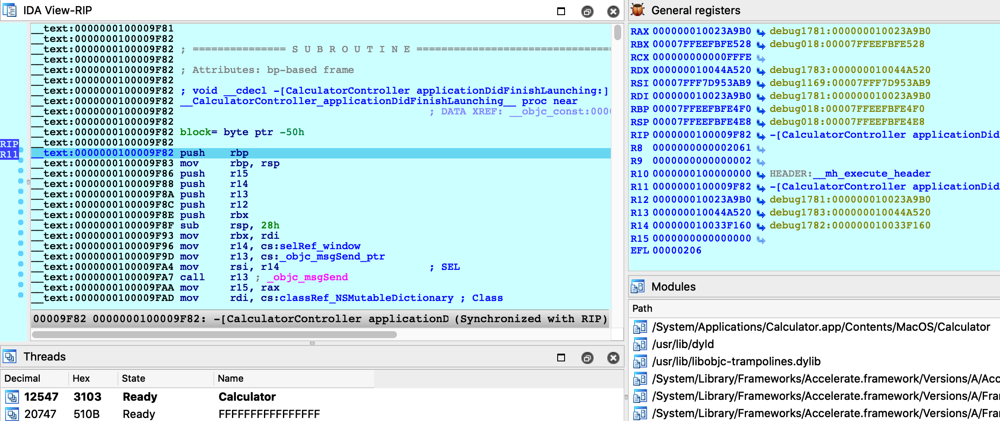
The effects of SIP are also apparent when attaching to an existing process. Try using menu Debugger>Attach to process, with SIP enabled there will likely only be a handful of apps that IDA can debug:
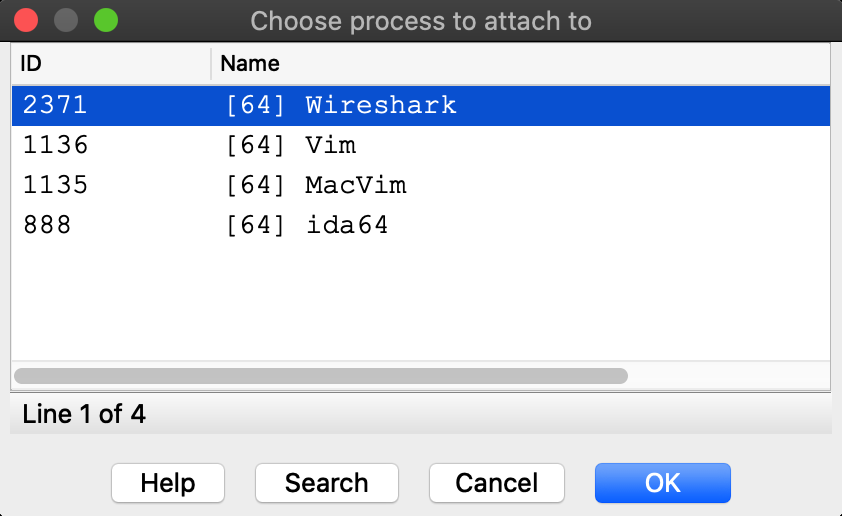
Disabling SIP makes all system apps available for attach:
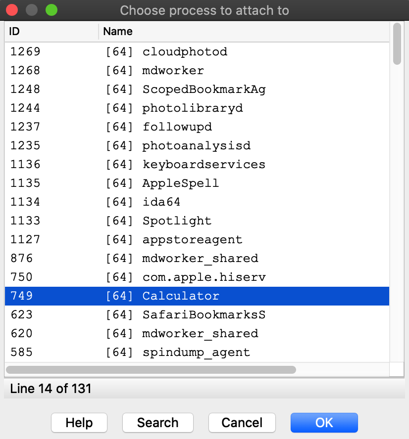
It is unfortunate that such drastic measures are required to inspect system processes running on your own machine, but this is the reality of MacOS. We advise that you only disable System Integrity Protection when absolutely necessary, or use a virtual machine that can be compromised with impunity.
Debugging System Libraries
With IDA you can debug any system library in /usr/lib/ or any framework in /System/Library/.
This functionality is fully supported, but surprisingly it is one of the hardest problems the mac debugger must handle. To demonstrate this, let’s try debugging the _getaddrinfo function in libsystem_info.dylib.
Consider the getaddrinfo application from samples.zip:
{% file src=“samples.zip” %}
#include <sys/types.h>
#include <sys/socket.h>
#include <netdb.h>
#include <netinet/in.h>
#include <arpa/inet.h>
#include <string.h>
#include <stdio.h>
int main(int argc, char **argv)
{
if ( argc != 2 )
{
fprintf(stderr, "usage: %s <hostname>\n", argv[0]);
return 1;
}
struct addrinfo hints;
memset(&hints, 0, sizeof(hints));
hints.ai_family = AF_INET;
hints.ai_flags |= AI_CANONNAME;
struct addrinfo *result;
int code = getaddrinfo(argv[1], NULL, &hints, &result);
if ( code != 0 )
{
fprintf(stderr, "failed: %d\n", code);
return 2;
}
struct sockaddr_in *addr_in = (struct sockaddr_in *)result->ai_addr;
char *ipstr = inet_ntoa(addr_in->sin_addr);
printf("IP address: %s\n", ipstr);
return 0;
}
Try testing it out with a few hostnames:
$ ./getaddrinfo localhost
IP address: 127.0.0.1
$ ./getaddrinfo hex-rays.com
IP address: 104.26.10.224
$ ./getaddrinfo foobar
failed: 8
Now load libsystem_info.dylib in IDA and set a breakpoint at _getaddrinfo:
$ ida64 -o/tmp/libsystem_info /usr/lib/system/libsystem_info.dylib
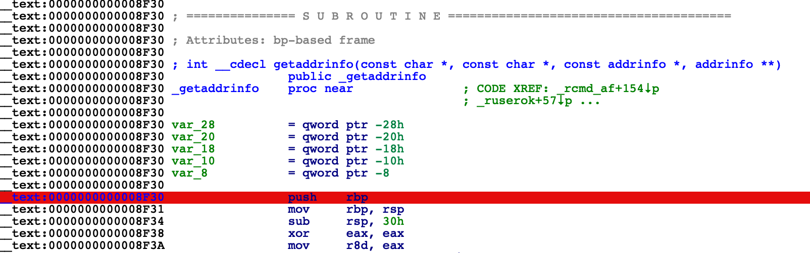
Choose Remote Mac OS X Debugger from the Debugger menu and under Debugger>Process options be sure to provide a hostname in the Parameters field. IDA will pass this argument to the executable when launching it:
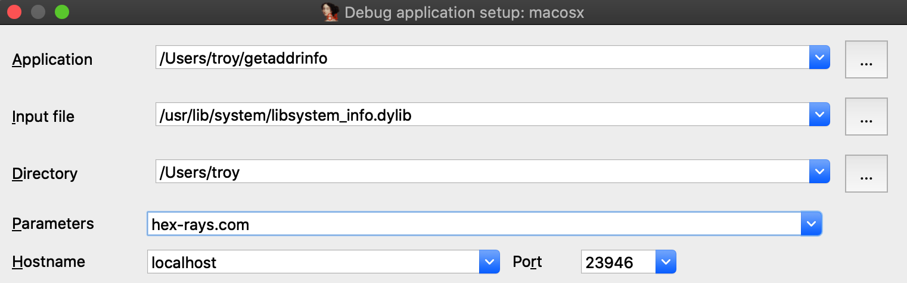
Before launching the process, use Ctrl+S to pull up the segment list for libsystem_info.dylib. Pay special attention to the __eh_frame and __nl_symbol_ptr segments. Note that they appear to be next to each other in memory:
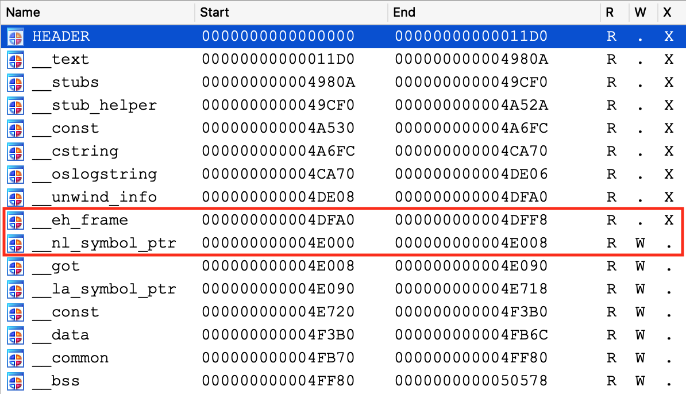
This will be important later.
Finally, use F9 to launch the debugger and wait for our breakpoint at _getaddrinfo to be hit. We can now start stepping through the logic:
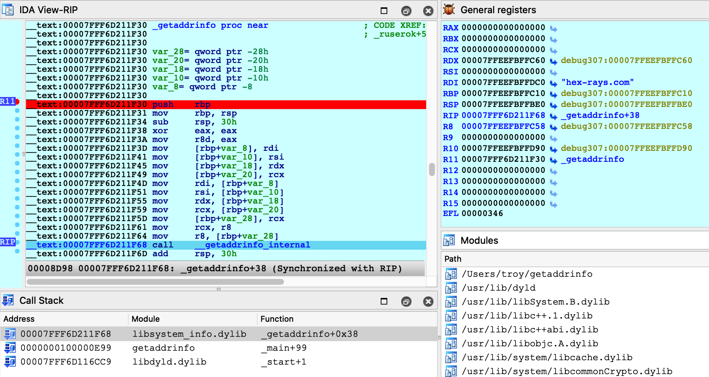
Everything appears to be working normally, but use Ctrl+S to pull up the segment information again. We can still see __eh_frame, but it looks like __nl_symbol_ptr has gone missing:
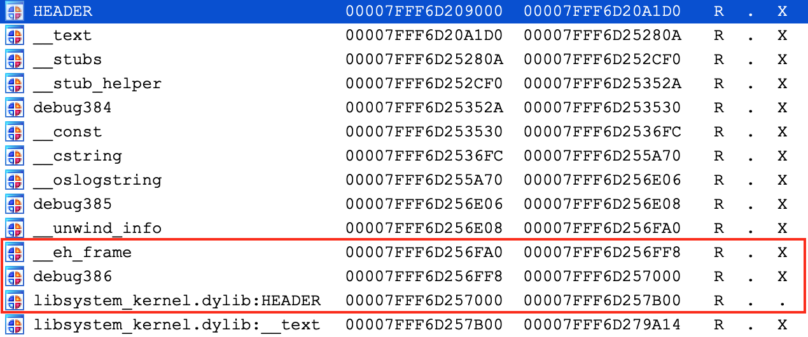
It is actually still present, but we find it at a much higher address:
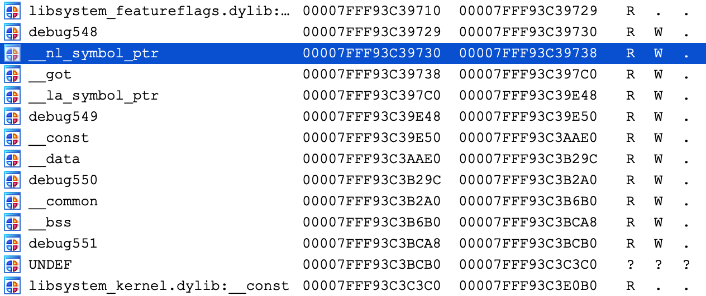
Recall that we opened the file directly from the filesystem (/usr/lib/system/libsystem_info.dylib). However this is actually not the file that macOS loaded into memory. The libsystem_info image in process memory was mapped in from the dyld_shared_cache, and the library’s segment mappings were modified before it was inserted into the cache.
IDA was able to detect this situation and adjust the database so that it matches the layout in process memory. This functionality is fully supported, but it is not trivial. Essentially the debugger must split your database in half, rebase all code segments to one address, then rebase all data segments to a completely different address.
It is worth noting there is another approach that achieves the same result, but without so much complexity.
Debugging Modules in dyld_shared_cache
As an alternative for the above example, note that you can load any module directly from a dyld_shared_cache file and debug it. For example, open the shared cache in IDA:
$ ida64 -o/tmp/libsystem_info2 /var/db/dyld/dyld_shared_cache_x86_64h
When prompted, select the “single module” option:
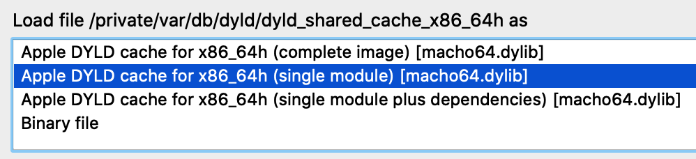
Then choose the libsystem_info module:
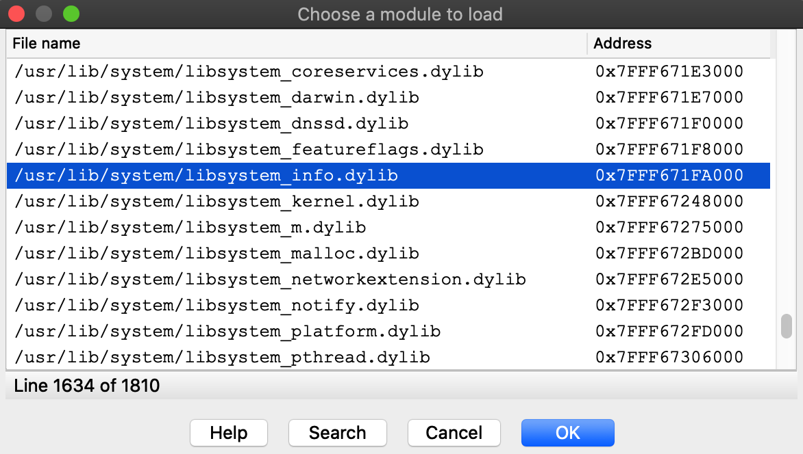
Select the Remote Mac OS X Debugger and for Debugger>Process options use the exact same options as before:
Now set a breakpoint at _getaddrinfo and launch the process with F9.
After launching the debugger you might see this warning:
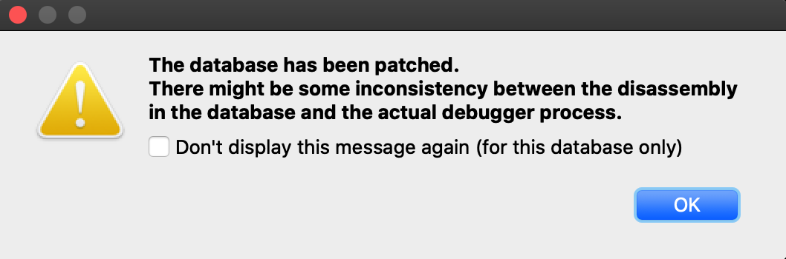
This is normal. Modules from the dyld_shared_cache will contain tagged pointers, and IDA patched the pointers when loading the file so that analysis would not be hindered by the tags. IDA is warning us that the patches might cause a discrepancy between the database and the process, but in this case we know it’s ok. Check Don’t display this message again and don’t worry about it.
Launching the process should work just like before, and we can start stepping through the function in the shared cache:
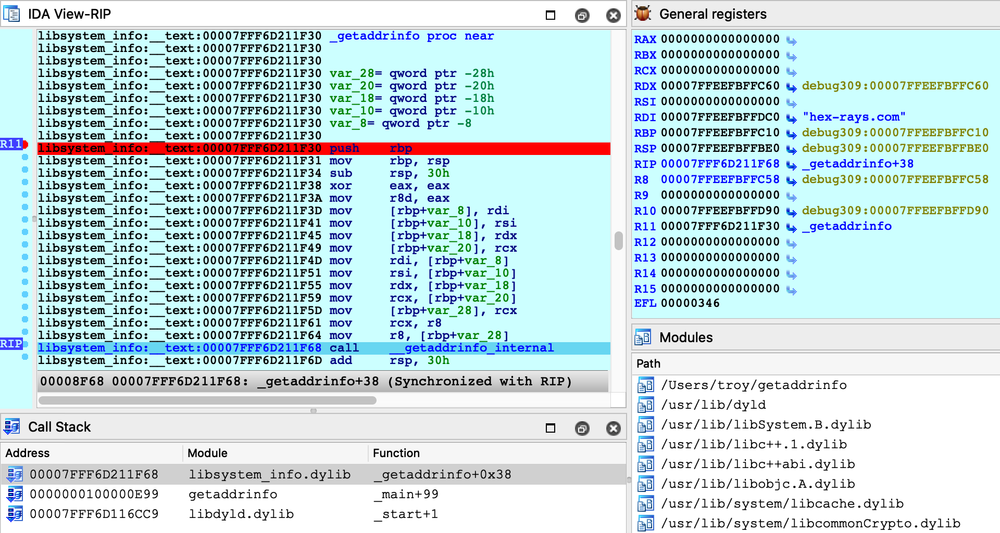
This time there was no special logic to map the database into process memory. Since we loaded the module directly from the cache, segment mappings already match what’s expected in the process. Thus only one rebasing operation was required (as apposed to the segment scattering discussed in the previous example).
Both techniques are perfectly viable and IDA goes out of its way to fully support both of them. In the end having multiple solutions to a complex problem is a good thing.
Debugging Objective-C Applications
When debugging macOS applications it is easy to get lost in some obscure Objective-C framework. IDA’s mac debugger provides tools to make debugging Objective-C code a bit less painful.
Consider the bluetooth application from samples.zip:
{% file src=“samples.zip” %}
#import <IOBluetooth/IOBluetooth.h>
int main(void)
{
NSArray *devices = [IOBluetoothDevice pairedDevices];
int count = [devices count];
for ( int i = 0; i < count; i++ )
{
IOBluetoothDevice *device = [devices objectAtIndex:i];
NSLog(@"%@:\n", [device name]);
NSLog(@" paired: %d\n", [device isPaired]);
NSLog(@" connected: %d\n", [device isConnected]);
}
return 0;
}
The app will print all devices that have been paired with your host via Bluetooth. Try running it:
$ ./bluetooth
2020-05-22 16:27:14.443 bluetooth[17025:15645888] Magic Keyboard:
2020-05-22 16:27:14.443 bluetooth[17025:15645888] paired: 1
2020-05-22 16:27:14.443 bluetooth[17025:15645888] connected: 1
2020-05-22 16:27:14.443 bluetooth[17025:15645888] Apple Magic Mouse:
2020-05-22 16:27:14.443 bluetooth[17025:15645888] paired: 1
2020-05-22 16:27:14.443 bluetooth[17025:15645888] connected: 1
2020-05-22 16:27:14.443 bluetooth[17025:15645888] iPhone SE:
2020-05-22 16:27:14.443 bluetooth[17025:15645888] paired: 0
2020-05-22 16:27:14.443 bluetooth[17025:15645888] connected: 0
Let’s try debugging this app. First consider the call to method +[IOBluetoothDevice pairedDevices]:
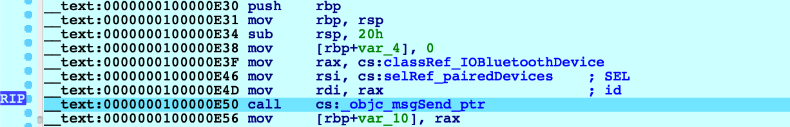
If we execute a regular instruction step with F7, IDA will step into the _objc_msgSend function in libobjc.A.dylib, which is probably not what we want here. Instead use shortcut Shift+O. IDA will automatically detect the address of the Objective-C method that is being invoked and break at it:
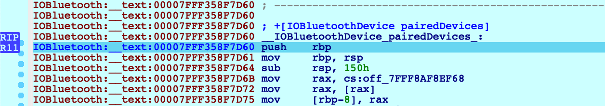
This module appears to be Objective-C heavy, so it might be a good idea to extract Objective-C type info from the module using right click -> Load debug symbols in the Modules window:
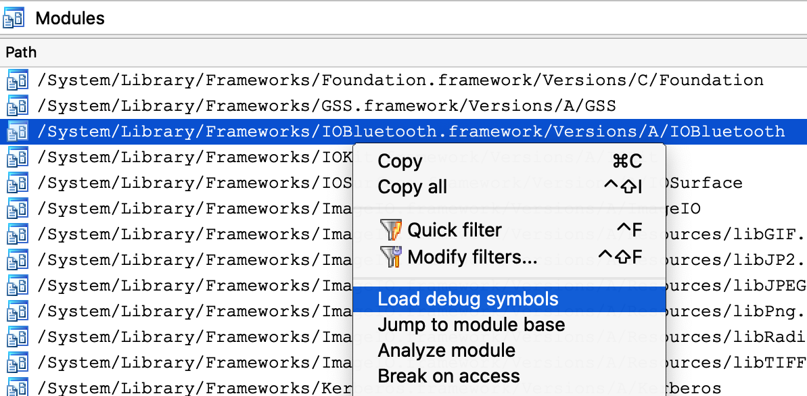
This operation will extract any Objective-C types encoded in the module, which should give us some nice prototypes for the methods we’re stepping in:
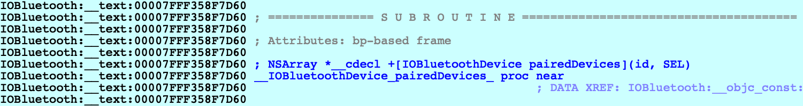
Let’s continue to another method call - but this time the code invokes a stub for _objc_msgSend that IDA has not analyzed yet, so its name has not been properly resolved:
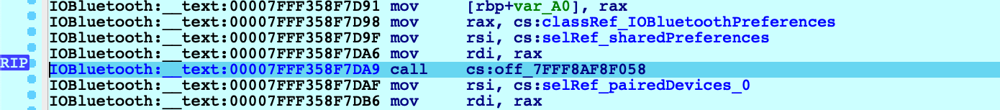
In this case Shift+O should still work:
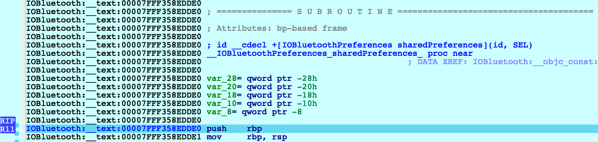
Shift+O is purposefully flexible so that it can be invoked at any point before a direct or indirect call to _objc_msgSend. It will simply intercept execution at the function in libobjc.A.dylib and use the arguments to calculate the target method address.
However, you must be careful. If you use this action in a process that does not call _objc_msgSend, you will lose control of the process. It is best to only use it when you’re certain the code is compiled from Objective-C and an _objc_msgSend call is imminent.
Decompiling Objective-C at Runtime
The Objective-C runtime analysis performed by Load debug symbols will also improve decompilation.
Consider the method -[IOBluetoothDevice isConnected]:
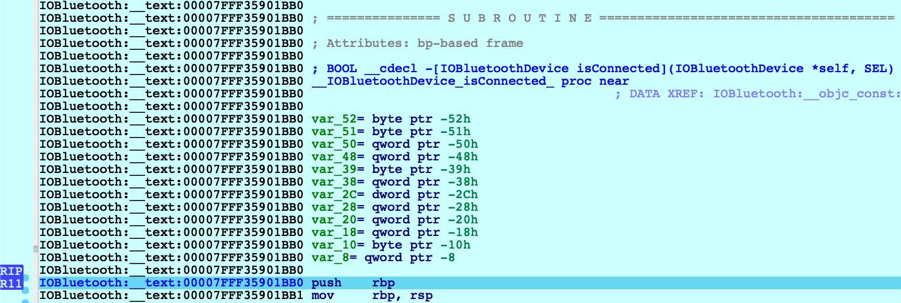
Before we start stepping through this method we might want to peek at the pseudocode to get a sense of how it works. Note that the Objective-C analysis created local types for the IOBluetoothDevice class, as well as many other classes:
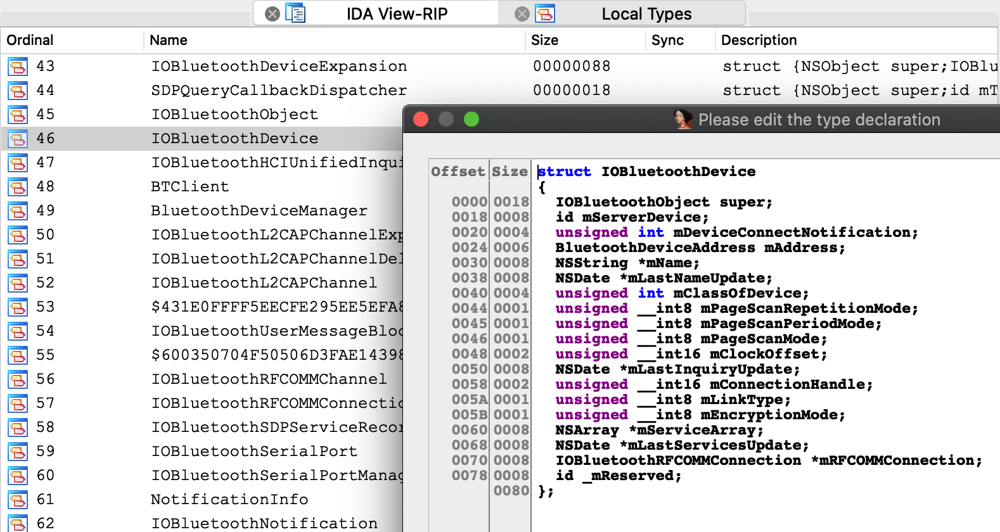
This type info results in some sensible pseudocode:
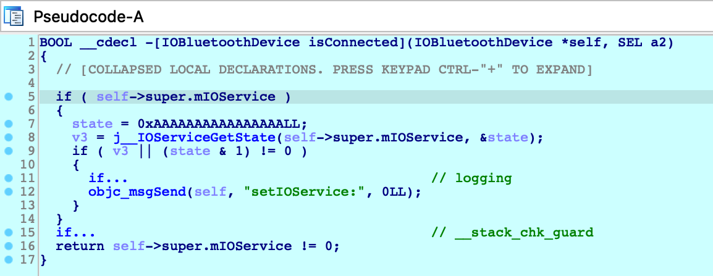
We knew nothing about this method going in - but it’s immediately clear that device connectivity is determined by the state of an io_service_t handle in the IOBluetoothObject superclass, and we’re well on our way.
Debugging Over SSH
In this section we will discuss how to remotely debug an app on a mac machine using only an SSH connection. Naturally, this task introduces some unique complications.
To start, copy the mac_server binaries and the bluetooth app from samples.zip:
{% file src=“samples.zip” %}
to the target machine:
$ scp <IDA install dir>/dbgsrv/mac_server* user@remote:
$ scp bluetooth user@remote:
Now ssh to the target machine and launch the mac_server:
$ ssh user@remote
user@remote:~$ ./mac_server64
IDA Mac OS X 64-bit remote debug server(MT) v7.5.26. Hex-Rays (c) 2004-2020
Listening on 0.0.0.0:23946...
Now open the bluetooth binary on the machine with your IDA installation, select Remote Mac OS X Debugger from the debugger menu, and for Debugger>Process options set the debugging parameters. Be sure to replace <remote user> and <remote ip> with the username and ip address of the target machine:
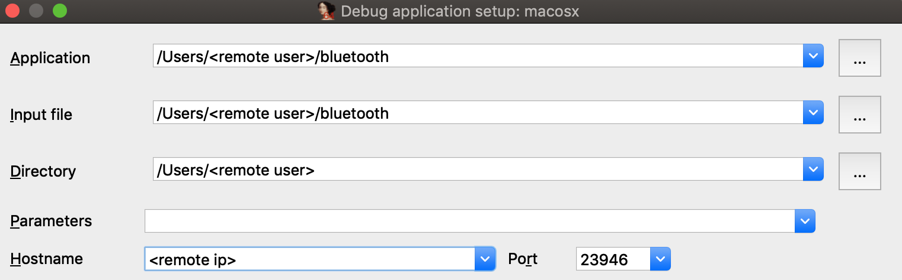
Try launching the debugger with F9. You might get the following error message:
This happened because debugging requires manual authentication from the user for every login session (via the Take Control prompt discussed under Using the Mac Debug Server, above).
But since we’re logged into the mac via SSH, the OS has no way of prompting you with the authentication window and thus debugging permissions are refused.
Note that mac_server64 might have printed this workaround:
WARNING: The debugger could not acquire the necessary permissions from the OS to
debug mac applications. You will likely have to specify the proper credentials at
process start. To avoid this, you can set the MAC_DEBMOD_USER and MAC_DEBMOD_PASS
environment variables.
But this is an extreme measure. As an absolute last resort you can launch the mac_server with your credentials in the environment variables, which should take care of authentication without requiring any interaction with the OS. However there is a more secure workaround.
In your SSH session, terminate the mac_server process and run the following command:
$ security authorizationdb read system.privilege.taskport > taskport.plist
Edit taskport.plist and change the authenticate-user option to false:
<key>authenticate-user</key>
<false/>
Then apply the changes:
$ sudo security authorizationdb write system.privilege.taskport < taskport.plist
This will completely disable the debugging authentication prompt (even across reboots), which should allow you to use the debug server over SSH without macOS bothering you about permissions.
Dealing With Slow Connections
When debugging over SSH you might experience some slowdowns. For example you might see this dialog appear for several seconds when starting the debugger:
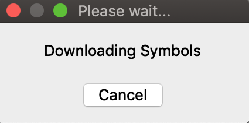
During this operation IDA is fetching function names from the symbol tables for all dylibs that have been loaded in the target process. It is a critical task (after all we want our stack traces to look nice), but it is made complicated by the sheer volume of dylibs loaded in a typical macOS process due to the dyld_shared_cache. This results in several megabytes of raw symbol names that mac_server must transmit over the wire every time the debugger is launched.
We can fix this by using the same trick that IDA’s Remote iOS Debugger uses to speed up debugging - by extracting symbol files from the dyld cache and parsing them locally. Start by downloading the ios_deploy utility from our download center, and copy it to the remote mac:
$ scp ios_deploy user@remote:
Then SSH to the remote mac and run it:
$ ./ios_deploy symbols -c /var/db/dyld/dyld_shared_cache_x86_64h -d mac_symbols
Extracting symbols from /var/db/dyld/dyld_shared_cache_x86_64h => mac_symbols
Extracting symbol file: 1813/1813
mac_symbols: done
$ zip -r mac_symbols.zip mac_symbols
Copy mac_symbols.zip from the remote machine to your host machine and unzip it. Then open Debugger>Debugger options>Set specific options and set the Symbol path field:
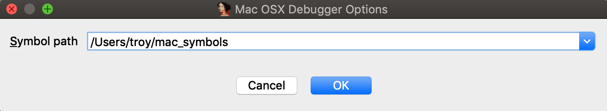
Now try launching the debugger again, it should start up much faster.
Also keep the following in mind:
- Use /var/db/dyld/dyld_shared_cache_i386 if debugging 32-bit apps
- You must perform this operation after every macOS update. Updating the OS will update the dyld_shared_cache, which invalidates the extracted symbol files.
- The ios_deploy utility simply invokes dyld_shared_cache_extract_dylibs_progress from the dsc_extractor.bundle library in Xcode. If you don’t want to use ios_deploy there are likely other third-party tools that do something similar.
Debugging arm64 Applications on Apple Silicon
IDA 7.6 introduced the ARM Mac Debugger, which can debug any application that runs natively on Apple Silicon.
On Apple Silicon, the same rules apply (see Codesigning & Permissions above). The Local ARM Mac Debugger can only be used when run as root, so it is better to use the Remote ARM Mac Debugger with the debug server (mac_server_arm64), which can debug any arm64 app out of the box (see Using the Mac Debug Server).
We have included arm64 versions of the sample binaries used in the previous examples. We encourage you to go back and try them. They should work just as well on Apple Silicon.
Debugging arm64e System Applications
Similar to Intel Macs, IDA cannot debug system apps on Apple Silicon until System Integrity Protection is disabled.
But here macOS introduces another complication. All system apps shipped with macOS are built for arm64e - and thus have pointer authentication enabled. This is interesting because ptruath-enabled processes are treated much differently within the XNU kernel. All register values that typically contain pointers (PC, LR, SP, and FP) will be signed and authenticated by PAC.
Thus, if a debugger wants to modify the register state of an arm64e process, it must know how to properly sign the register values. Only arm64e applications are allowed to do this (canonically, at least).
You may have noticed that IDA 7.6 ships with two versions of the arm64 debug server:
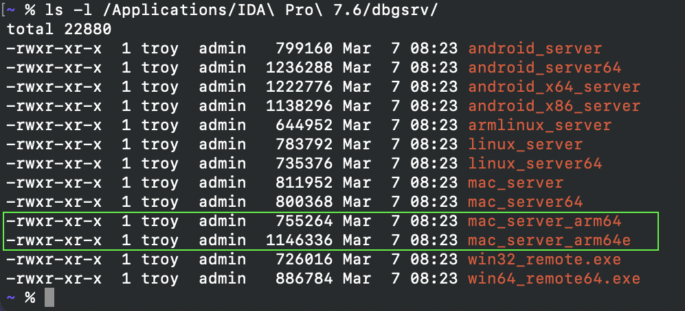
mac_server_arm64e is built specifically for the arm64e architecture, and thus will be able to properly inspect other arm64e processes. We might want to try running this version right away, but by default macOS will refuse to run any third-party software built for arm64e:
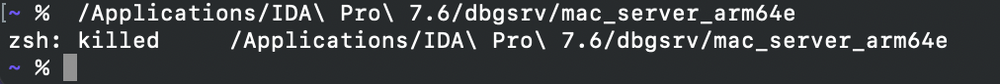
According to Apple, this is because the arm64e ABI is not stable enough to be used generically. In order to run third-party arm64e binaries you must enable the following boot arg:
$ sudo nvram boot-args=-arm64e_preview_abi
After rebooting you can finally run mac_server_arm64e:
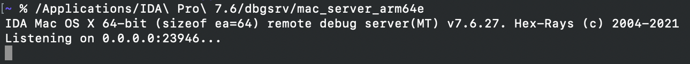
This allows you to debug any system application (e.g. /System/Applications/Calculator.app) without issue:
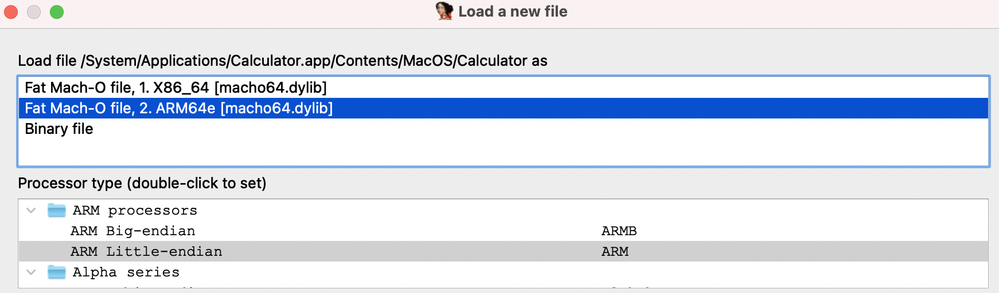
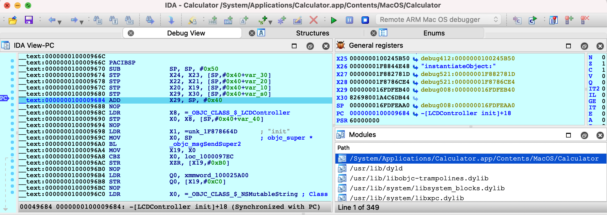
Also note that the arm64e ABI limitation means you cannot use the Local ARM Mac Debugger to debug system arm64e apps, since IDA itself is not built for arm64e. It is likely that Apple will break the arm64e ABI in the future and IDA might cease to work. We want to avoid this scenario entirely.
Using the Remote ARM Mac Debugger with mac_server_arm64e is a nice workaround. It guarantees ida.app will continue to work normally regardless of any breakages in the arm64e ABI, and we can easily ship new arm64e builds of the server to anybody who needs it.
Apple Silicon: TL;DR
To summarize:
- Use mac_server_arm64 if you’re debugging third-party arm64 apps that aren’t protected by SIP
- Use mac_server_arm64e if you’re feeling frisky and want to debug macOS system internals. You must disable SIP and enable nvram boot-args=-arm64e_preview_abi, then you can debug any app you want (arm64/arm64e apps, system/non-system apps, shouldn’t matter).
Support
If you have any questions about this writeup or encounter any issues with the debugger itself in your environment, don’t hesitate to contact our support.
Our Mac support team has years of experience keeping the debugger functional through rapid changes in the Apple developer ecosystem. It is likely that we can resolve your issue quickly.